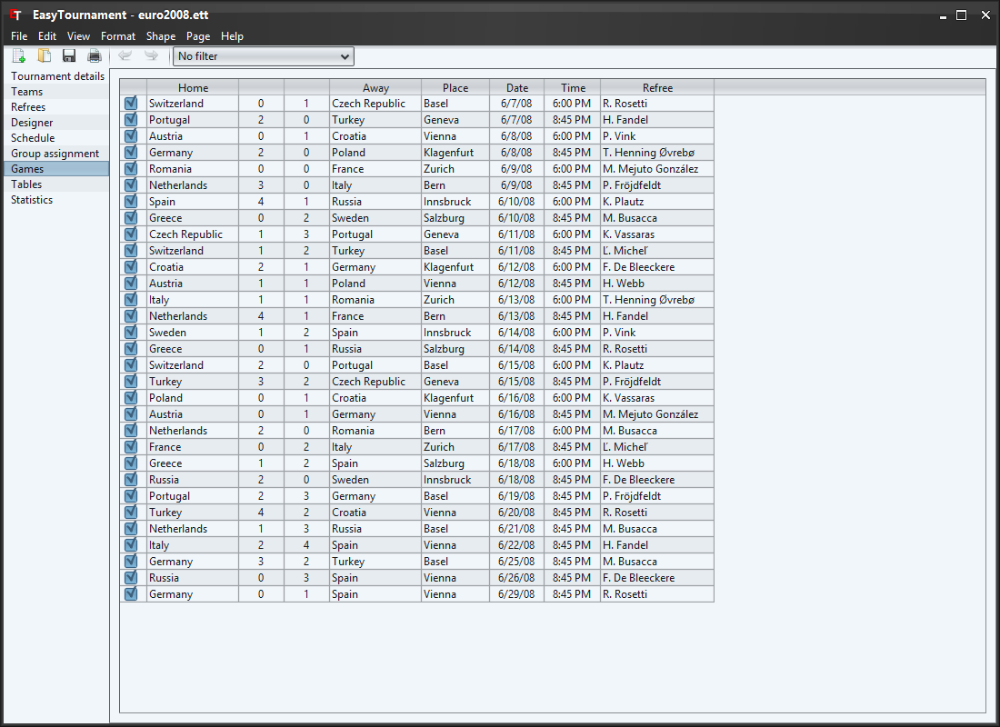

This table is very similar to the one in the schedule screen. It shows the team names instead of the positions and has two additional score columns.
The table is ordered according the date and time.
With the checkbox in the first column you can set if a game is played of not.
Refrees are only selectable if they are added on the refree screen. If you don't plan to add any refrees you can hide the refree column by deselecting the corresponding checkbox in the settings.
There are 3 different ways to enter a score.
To do this you just have to click into the corresponding score cell and enter the number.
This is the easiest way, but has the disadvantage that you can only evaluate the team goal statistic.
With a doubleclick or the context menu (right mouse button) you can open the game dialog (see next image).
On the left side you can enter the results per period. The final result will be calculated automatically. If the game goes in an overtime or a penalty shootout select the corresponding checkbox.
This way of entering results has the same disadvantage as the last one: only team goal statistics are available.
This is the most involved way but provides a lot of statistics and a printable game report.
With a doubleclick or the context menu (right mouse button) you can open the game dialog (see next image).
On the right side you can add game events by clicking on the "Add" button or the corresponding entry in the context menu (see next image).
In a first step you choose one of the events which you have defined in the game events tab. Afterwards enter the playtime in which the event happened (Caution: Events that happen in the additional time have to be entered in the last minute of the regular time (e.g. a goal in the 45+1 minute of the first half time has to be entered at 45 minutes and 0 seconds) otherwise they are added to the next period). In a next step you choose the team for which the event happened (e.g. the scoring team or the the team that receives a yellow card). Now you can add the players by drag and drop or with the arrow buttons to the boxes on the left side.
If player X of team A scores an owngoal, you can enter this as follows: Event: Goal, Team: Team B, Player: X of Team A
With a double click on the event or by selecting the corresponding entry in the context menu (right mouse button) you can edit an event.
The games can be saved as CSV (e.g. for spreadsheet applications as MS Excel) or as HTML file by selecting the menu "File"->"Export...". In the opening dialog you need to choose "Results".
In the saving dialog (see next image) you can choose the desired filetype.
If you have entered a game report you can save it as CSV or HTML by clicking on the "Export..." button below the report.